Race screen — 2026-11-16 · updated 13:42
M2 P&L −£2.000 won, 1 lost · 10 to run
£2 per M2 priced 3.5–8 at the off (BSP; SP until BSP comes in next morning) · loser −£2 · winner £2 × (BSP − 1) less 5% commission
Order: each race is in market order (shortest forecast price first). A gold
◆ 1/2/3 marks your data model's top 3 — a gold pick at a
longer price is where your data disagrees with the market (a value spot for your eye).
Badges by the name: M2 Market #2 — 2nd favourite in the morning forecast, qualifying race; back only if the live price is 3.5–8.0 ★ EYE finished last run strongly (+score) ⚠ hard trk easy→hard track step-up (−score) ▼ easy trk recently placed at much tougher track (+score) ⚠ draw badly drawn here (−score) ⚠ pace run-style fights the course pace bias (−score) ⚠ ground has tried this going but never placed on it (−score) ▼ cls dropping in class today (+score) ▲ cls rising in class today (−score) ▼ in money in vs opening show ▲ drift drifting vs opening show ⚠ 2 runs / IRE form too little / foreign form to read.
OR column: ↑ green arrow = BHA rating rising (improving horse); ↓ orange = rating falling. TF column: Timeform stars 1–5 (★★★★★ = top rated).
Suit column: going✓ / trip✓ / trk✓ (track toughness) / draw✓ (well drawn).
Rest: green Crse = won there; yellow comment = trouble in running; greyed = novice/bumper or non-handicap 5–6f sprint (left out of the tally — handicap sprints now shown at full opacity). Res fills in after racing (winner green; ✓ = winner came from the top-3 market rows, ◆ = one of your gold data picks won); Spd is a rough home figure; BSP fills in the next morning.
Badges by the name: M2 Market #2 — 2nd favourite in the morning forecast, qualifying race; back only if the live price is 3.5–8.0 ★ EYE finished last run strongly (+score) ⚠ hard trk easy→hard track step-up (−score) ▼ easy trk recently placed at much tougher track (+score) ⚠ draw badly drawn here (−score) ⚠ pace run-style fights the course pace bias (−score) ⚠ ground has tried this going but never placed on it (−score) ▼ cls dropping in class today (+score) ▲ cls rising in class today (−score) ▼ in money in vs opening show ▲ drift drifting vs opening show ⚠ 2 runs / IRE form too little / foreign form to read.
OR column: ↑ green arrow = BHA rating rising (improving horse); ↓ orange = rating falling. TF column: Timeform stars 1–5 (★★★★★ = top rated).
Suit column: going✓ / trip✓ / trk✓ (track toughness) / draw✓ (well drawn).
Rest: green Crse = won there; yellow comment = trouble in running; greyed = novice/bumper or non-handicap 5–6f sprint (left out of the tally — handicap sprints now shown at full opacity). Res fills in after racing (winner green; ✓ = winner came from the top-3 market rows, ◆ = one of your gold data picks won); Spd is a rough home figure; BSP fills in the next morning.
Winner in the market top 3: 1/9 (11%) · in your gold data top 3: 1/9 (11%) — greyed novice / sprint races excluded
⚠ limited form — likely skip
| Res | Horse | Price | BSP | Dr | Form | Crse | Suit | OR | Spd | TF | Last comment |
|---|---|---|---|---|---|---|---|---|---|---|---|
| 1 | 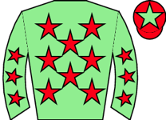 Mysterland ◆ 1 ▲ cls | 2.25 | - | 4-1 | 79 | Prominent, pushed along well over 2f out and pressed leader, stayed on in sustained duel, | |||||
| 5 | 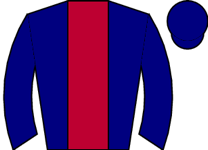 Ginolo ▲ cls | 2.50 | - | 2 | going✓ | 46 | Raced in third, headway to press winner over 2f out, soon ridden, kept on but always held | ||||
| 2 | Ar Aghaidh Leat | 11.00 | - | unraced | - | ||||||
| 0 | 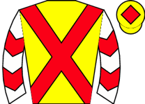 Mickey Viking ◆ 3 | 13.00 | - | unraced | - | ||||||
| 4 | 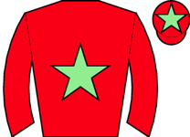 Crock's Bottom ▲ cls | 15.00 | - | 7 | 60 | Midfield, ridden in rear over 5f out, tailed off 4f out | |||||
| 3 | 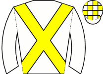 Gold Hill ◆ 2 | 21.00 | - | 4-9-4 | 70 | ★★☆☆☆ | Took keen hold, chased leaders, pushed along before 2 out, faded approaching last |
| Res | Horse | Price | BSP | Dr | Form | Crse | Suit | OR | Spd | TF | Last comment |
|---|---|---|---|---|---|---|---|---|---|---|---|
| 1 | 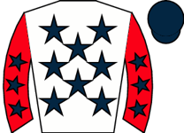 Prairie Diamond ◆ 3 ⚠ ground | 4.50 | - | 7-1---2-3-- | trk✓ | 104 ↑ | 68 | ★★★★☆ | Disputed lead when not fluent and unseated rider 1st | ||
| 2 | 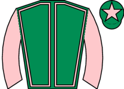 Rip Wheeler ◆ 1 M2 ▼ cls | 5.00 | - | --4-1-2-4-1 | going✓ trk✓ | 102 | 81 | ★★★★☆ | Chased leaders, pushed along before 3 out, ridden before last, led run-in, ran on, always | ||
| 3 | Market House ★ EYE | 6.00 | - | 4-2-3-5-4-3 | 1r | trip✓ trk✓ | 98 ↑ | 74 | ★★★★☆ | Held up behind leaders, ridden after 2 out,, stayed on well run-in | |
| 0 | 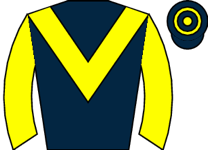 Girl Of Gold ◆ 2 ▲ cls | 7.00 | - | 4-2-2-3-1-4 | going✓ trip✓ trk✓ | 104 ↓ | 69 | ★★★☆☆ | Prominent, soon raced in third, pushed along and hung left on bend inside 2f out, briefly | ||
| 10 | Jefe Triunfo ⚠ ground | 7.00 | - | 10-7-5-4-1-3 | 2r 1W | trk✓ | 95 | 78 | ★★★☆☆ | Raced in second, pushed along before 2 out, lost second approaching 2 out, weakened before | |
| 7 | 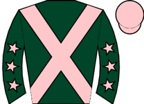 Cadillac Ranch | 11.00 | - | --1-5-2-3-4 | 99 | 55 | ★★★★★ | Held up in rear, not fluent 1st, behind 2nd, headway 3 out, third and no impression from 2 | |||
| 8 | 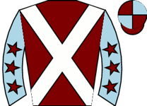 Whatsgoingonmarvin | 17.00 | - | 2-6-6-12-5-3 | trk✓ | 95 | 58 | ★★★☆☆ | Towards rear, modest headway after 3 out, chased leading pair from 2 out, kept on | ||
| 0 | 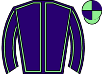 No No Fizz | 21.00 | - | 9-8-1---5-- | going✓ | 102 | 56 | ★★☆☆☆ | Soon prominent, disputed lead after 1st, narrowly led before 3rd, hit 4th, headed 5th, pus | ||
| 5 | 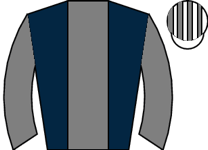 Kandor ▼ cls | 21.00 | - | 5-4-4-5-4-5 | 1r | 104 ↓ | 53 | ★★☆☆☆ | Wore red hood to post, mid-division, weakened after 3 out | ||
| 9 | 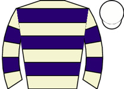 Nelson Gate ▲ cls | 21.00 | - | 3-4-3-3-5-10 | 1r 1p | trk✓ | 94 ↓ | 67 | ★★★☆☆ | Prominent, pushed along and lost position 5f out, tailed off | |
| 6 | Glitz And Glamour ⚠ IRE form | 21.00 | - | 3-9---6-11-4 | 103 | 40 | ★★☆☆☆ | Detached in rear, not fluent 1st, ridden and went fourth when not fluent 2 out, kept on sa | |||
| 4 | 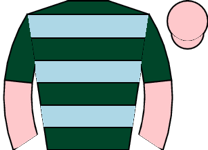 Bread And Butter | 34.00 | - | 8-5-6-4-2-4 | 2r 1p | going✓ trip✓ trk✓ | 81 ↓ | 68 | ★★★☆☆ | Led, went four lengths clear 4 out, reduced lead after 3 out, headed approaching 2 out, so |
| Res | Horse | Price | BSP | Dr | Form | Crse | Suit | OR | Spd | TF | Last comment |
|---|---|---|---|---|---|---|---|---|---|---|---|
| 0 | 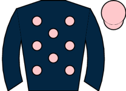 Crest Of Stars ◆ 1 | 3.75 | - | 1-4-3-1-3-2 | 1r 1p | trip✓ trk✓ | 114 | 82 | ★★★★★ | Chased winner, briefly dropped to last 6th, four lengths down 3 out, soon ridden, in touch | |
| 0 |  Icare Grandchamp ◆ 2 M2 Icare Grandchamp ◆ 2 M2 | 4.50 | - | 1-5-2-1-3-2 | 1r 1W | going✓ trip✓ trk✓ | 111 ↑ | 60 | ★★★★☆ | Held up in rear, headway to mid division 6th, not fluent 8th, headway to chase leader afte | |
| 0 | 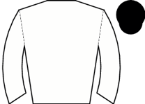 Ionian ⚠ IRE form | 5.00 | - | 6-2-4-3-7 | trk✓ | 114 | 68 | ★★★☆☆ | Disputed lead, took keen hold, led from 4th, ridden and headed before last, 5th at last, n | ||
| 0 |  Clap Of Thunder ◆ 3 Clap Of Thunder ◆ 3 | 5.50 | - | 5-3-3-4-3-4 | trk✓ | 115 | 70 | ★★★★☆ | Midfield, in touch with leaders 4 out, ridden before 2 out, kept on but lost third last, s | ||
| 0 |  Siam Park Siam Park | 6.00 | - | ----2-3-3-5 | 114 | 68 | ★★★☆☆ | Led until 8th, weakened 3 out | |||
| 0 | 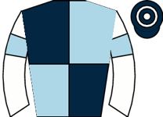 Reteti | 11.00 | - | 3-2-1-3-3-4 | 1r 1p | trk✓ | 103 ↑ | 59 | ★★★☆☆ | Held up behind leaders, headway to chase leader before 3 out, not much room and mistake 3 |
| Res | Horse | Price | BSP | Dr | Form | Crse | Suit | OR | Spd | TF | Last comment |
|---|---|---|---|---|---|---|---|---|---|---|---|
| 0 | 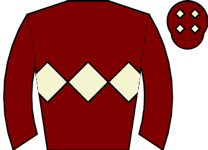 Grand Conqueror ◆ 2 ★ EYE | 4.00 | - | 1-1-2-2-3-1 | 2r 1W | going✓ trip✓ trk✓ | 127 ↑ | 65 | ★★★☆☆ | Mostly raced wide, prominent, led 3rd, not fluent 3 out, clear last, kept on well, comfort | |
| 0 | 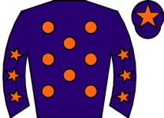 Kamille Au Kanada ◆ 3 M2 ▲ cls | 5.00 | - | 2-1-5-1-1-1 | 2r 1W | going✓ trip✓ trk✓ | 112 | 62 | ★★★★★ | Led, jumped fast and well, set good pace, steadily drew clear from 2 out, eased run-in, ve | |
| 0 | 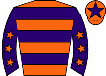 Tune In A Box ★ EYE | 6.00 | - | 5-7-3-2-5-1 | going✓ trk✓ | 120 | 63 | ★★★★☆ | Pressed leader, led approaching 2 out, drew clear before last, stayed on well run-in, ease | ||
| 0 |  Jaramillo ★ EYE ▲ cls Jaramillo ★ EYE ▲ cls | 7.00 | - | 6-5-6-8-3-1 | 121 ↓ | 71 | ★★☆☆☆ | Midfield, headway after 5th, took second 4 out, travelled smoothly and led on bend before | |||
| 0 | 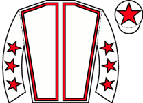 Norman Fletcher ◆ 1 ★ EYE | 8.00 | - | 5-3-2-2---1 | going✓ trip✓ trk✓ | 113 | 89 | ★★★★☆ | Mid-division, headway 4 out, disputed third 3 out, pushed along before last, ridden and le | ||
| 0 |  Dragons And Demons ★ EYE ⚠ ground ▲ cls Dragons And Demons ★ EYE ⚠ ground ▲ cls | 9.00 | - | --8-6-4-1 | 101 | 63 | ★★★☆☆ | Handy on outer, briefly shaken up on bend after 6th, went second after 3 out, pushed along | |||
| 0 | 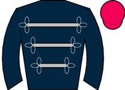 Percy Shelley ⚠ ground ▼ cls | 11.00 | - | 6-6-2-4-2-15 | 121 ↓ | 102 | ★★★☆☆ | Towards rear, ridden and headway well over 3f out, plugged on inside final furlong, never | |||
| 0 | 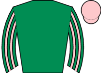 Stream Of Stars ▼ cls | 13.00 | - | 3-2-2-6-3-5 | 2r 1p | going✓ trip✓ trk✓ | 125 | 70 | ★★★☆☆ | Mid-division, pushed along after 3 out, kept on, never threatened | |
| 0 | Way Out ▲ cls | 51.00 | - | --2-10-5-11-- | 108 ↓ | 62 | ★★☆☆☆ | Prominent, weakened quickly and pulled up 3 out | |||
| 0 | 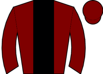 Tonaghneave Well ⚠ ground ▼ cls | 51.00 | - | 8-9-3---6-12 | 1r | 124 ↑ | 54 | ★☆☆☆☆ | Towards rear, ridden and struggling 4 out, tailed off |
⚠ limited form — likely skip
| Res | Horse | Price | BSP | Dr | Form | Crse | Suit | OR | Spd | TF | Last comment |
|---|---|---|---|---|---|---|---|---|---|---|---|
| 0 | 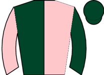 Golly Gosh ◆ 1 ★ EYE | 3.00 | - | --7-2-2-1-1 | 1r 1W | going✓ trk✓ | 82 ↑ | 55 | ★★★★☆ | Midfield, headway 10th, led 12th, faced challenge 3 out, steadily asserted from 2 out, wen | |
| 0 | 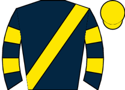 Anothermanicmonday | 4.50 | - | --11-6-5-7-2 | going✓ | 74 ↓ | 60 | ★★★★☆ | Led, ridden before last, headed flat, no extra towards finish, finished second, placed fir | ||
| 0 | 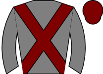 Alan Bresil ▼ cls | 6.00 | - | 5-4-6-3-3-- | 94 ↓ | 49 | ★★☆☆☆ | Mid-division, blundered and unseated rider 4th | |||
| 0 | 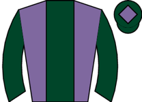 Of Corse I Can | 6.00 | - | 6-5-5-4-1-2 | 72 | 51 | ★★★☆☆ | Wore hood to post, held up in touch, dropped to last 7th, slightly detached 10th, pushed a | |||
| 0 | 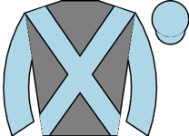 Athena's Dream ◆ 2 | 11.00 | - | 3-5-2-9-3-3 | trk✓ | 82 | 63 | ★★☆☆☆ | Soon raced in second, pushed along and lost two positions after 9th, mistake 2 out, ridden | ||
| 0 |  Jurassic Pet ⚠ ground Jurassic Pet ⚠ ground | 13.00 | - | 4-3-10-7 | 94 | 62 | ★☆☆☆☆ | Led, headed 3 out and pushed along, weakened before 2 out | |||
| 0 | 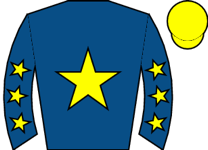 Good Girl Rachel ★ EYE ⚠ ground | 15.00 | - | 7-8-9-4-3 | 77 | 62 | ★★★☆☆ | Soon raced in second, disputed lead after 3rd, tracked leader after 7th, pushed along 10th | |||
| 0 | 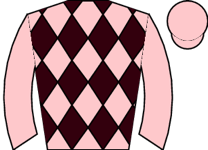 Ephyra ◆ 3 | 26.00 | - | 5-6-2-----5 | 3r 1p | going✓ trk✓ | 77 | 64 | ★★★★★ | Mid-division, ridden before 2 out, weakened before last |
| Res | Horse | Price | BSP | Dr | Form | Crse | Suit | OR | Spd | TF | Last comment |
|---|---|---|---|---|---|---|---|---|---|---|---|
| 0 |  Uncle Al ◆ 3 Uncle Al ◆ 3 | 1.91 | - | 6-3---2-3-1 | trip✓ trk✓ | 90 | 53 | ★★★★★ | Held up in rear, headway 14th, went second next, led 4 out, drew well clear from before ne | ||
| 0 | 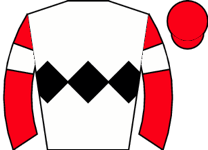 Daring Plan ◆ 1 M2 | 4.00 | - | 5-2---1-1-2 | going✓ trip✓ trk✓ | 87 ↑ | 62 | ★★★★☆ | Held up in mid-division, closed 2nd, not fluent 8th, went prominent after 13th, no chance | ||
| 0 | Back It Up ▼ cls | 5.50 | - | 4-5-4-5-4 | 102 | 55 | ★★★☆☆ | Chased leader, jumped high 2nd, headway to lead 3rd, not fluent 10th, chased leaders, ridd | |||
| 0 |  Walkinthewoods Walkinthewoods | 8.00 | - | 2---6-----4 | going✓ trk✓ | 89 ↓ | 48 | ★★☆☆☆ | Always towards rear, outpaced 3 out, pushed along 2 out, weakened after last | ||
| 0 | Sopran Thor ◆ 2 ▼ cls | 51.00 | - | 1---5------ | 1r | going✓ trk✓ | 105 ↓ | 76 | ★☆☆☆☆ | Always behind, pulled up after 3 out |
⚠ limited form — likely skip
| Res | Horse | Price | BSP | Dr | Form | Crse | Suit | OR | Spd | TF | Last comment |
|---|---|---|---|---|---|---|---|---|---|---|---|
| 0 | 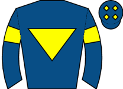 Bobbi's Beauty ◆ 1 ▼ cls | 3.00 | - | 2-2-5-1-3-1 | going✓ trip✓ trk✓ | 100 ↑ | 60 | ★★★★☆ | Made all, jumped left 5th, clear 3 out, reduced lead flat but always doing enough | ||
| 0 | 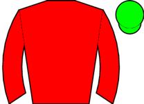 Sir Edward Lear ◆ 2 ▼ cls | 4.00 | - | 5-4-5-6-6-4 | 102 ↓ | 66 | ★★★★★ | Held up behind leaders, ridden and kept on one pace from out, never threatened leaders | |||
| 0 | 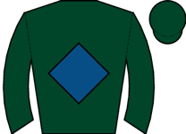 Kotari ▲ cls | 6.00 | - | 6-5-4-2-5-3 | trk✓ | 88 ↓ | 76 | ★★★☆☆ | Mid-division, pushed along over 2f out, ran on, took third over 110yds out, never nearer | ||
| 0 |  Sense Of Reason ◆ 3 ▲ cls Sense Of Reason ◆ 3 ▲ cls | 9.00 | - | 4-4-7-2---7 | trip✓ trk✓ | 102 ↓ | 81 | ★★★☆☆ | Raced in rear, shaken up over 3f out, minor headway to pass beaten rivals inside final fur | ||
| 0 | Graeme The Grey ⚠ ground ▼ cls | 11.00 | - | 2-4-3-4-6-7 | trk✓ | 90 | 50 | ★★★☆☆ | Towards rear on outside, some headway 6th, weakened from 3 out | ||
| 0 | 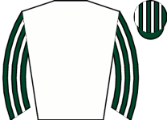 Giddyupadingdong ⚠ ground | 11.00 | - | --8-4-5-3-6 | 1r | 81 | 56 | ★★☆☆☆ | Mid-division, pushed along 3 out and no response | ||
| 0 | 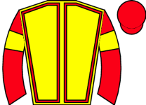 Freddiemissmolli ⚠ ground | 13.00 | - | 8-5---11-6-4 | 80 | 47 | ★★☆☆☆ | Took keen hold, held up in rear, not fluent 5th, mistake 2 out, ridden and kept on same pa | |||
| 0 | 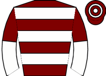 Victory Shout ⚠ ground ▼ cls | 21.00 | - | 9---1-2-2-12 | trk✓ | 98 ↑ | 54 | ★★★☆☆ | Always behind |
⚠ 5f–6f sprint (non-handicap) — judge live
| Res | Horse | Price | BSP | Dr | Form | Crse | Suit | OR | Spd | TF | Last comment |
|---|---|---|---|---|---|---|---|---|---|---|---|
| 0 |  Roosike Roosike | 5.00 | - | 5 | 2-1-14-9-5-2 | 1r 1p | going✓ trip✓ trk✓ | 75 ↓ | 93 | ★★★★☆ | Prominent on outside early, chased leaders, not much room and went second over 1f out, eve |
| 0 |  Go Go Girl ◆ 3 ▼ cls Go Go Girl ◆ 3 ▼ cls | 5.50 | - | 1 | 3-2 | trk✓ | 73 | 95 | Early to post, chased leader, ridden 2f out, kept on same pace inside final furlong, alway | ||
| 0 |  Harry's Pop Harry's Pop | 6.50 | - | 8 | 4-4-1-1-5-3 | trip✓ | 75 ↑ | 94 | ★★★☆☆ | Handy on outer, pushed along 2f out, every chance 1f out, held final 110yds | |
| 0 | 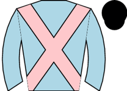 Time Teller ◆ 1 ★ EYE ▼ cls | 8.00 | - | 7 | 8-2-2 | 1r 1p | going✓ trk✓ | 74 | 95 | ★★★★☆ | Prominent, ridden 2f out, kept on inside final furlong, no chance with winner |
| 0 | 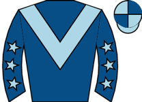 Lord Ragnar ▼ cls | 8.00 | - | 3 | 1-2-4-2-7-3 | going✓ trip✓ trk✓ | 75 | 96 | ★★★★☆ | Soon prominent on outside, ridden over 2f out, held inside final furlong, kept on, went th | |
| 0 | 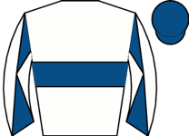 Romeo Guest ⚠ ground ▼ cls | 9.00 | - | 6 | 5-9-3 | 1r | 70 | 91 | ★★★☆☆ | Wore red hood to post, led, ridden well over 1f out, ran on, headed final 110yds, no extra | |
| 0 |  Big Hitter ◆ 2 ▼ cls Big Hitter ◆ 2 ▼ cls | 11.00 | - | 9 | 2-2-3-1-7 | trip✓ trk✓ | 75 | 96 | ★★★★☆ | Keen towards rear, never on terms | |
| 0 | Sue's Last Chance | 11.00 | - | 11 | 5-8-18-15-3-5 | 1r 1p | trk✓ | 67 | 95 | ★★★☆☆ | Close up, ridden and weakened 2f out |
| 0 | 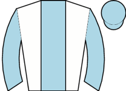 Pon Pon Dalia ▼ cls | 17.00 | - | 2 | 5-2-1-8 | 2r 1W | going✓ trip✓ trk✓ | 68 | 92 | ★★★☆☆ | Raced in near side pair, mid-division, pushed along 3f out, never involved |
| 0 | 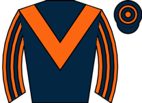 Farasan ⚠ ground ▼ cls | 17.00 | - | 10 | 6-4-4-8-9-7 | 67 | 91 | ★★☆☆☆ | Held up rear of mid-division, some headway over 1f out, never on terms, weakened inside fi | ||
| 0 | 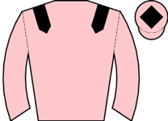 Angel Ang | 26.00 | - | 4 | 1-10-4-5-8 | 2r 1W | going✓ trip✓ trk✓ | 67 | 92 | ★★☆☆☆ | Towards rear on outside, pushed along 3f out, hung left and well beaten final 2f |
⚠ limited form — likely skip | 5f–6f sprint (non-handicap) — judge live
| Res | Horse | Price | BSP | Dr | Form | Crse | Suit | OR | Spd | TF | Last comment |
|---|---|---|---|---|---|---|---|---|---|---|---|
| 0 |  Desert Romance ◆ 1 ★ EYE ▼ cls Desert Romance ◆ 1 ★ EYE ▼ cls | 3.00 | - | 4 | 3-3 | 80 | 100 | Wore hood to post, midfield, shaken up over 1f out, kept on inside final furlong, no extra | |||
| 0 | 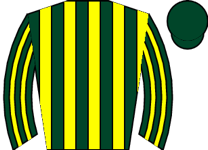 Tootgarook | 5.50 | - | 11 | unraced | - | |||||
| 0 | 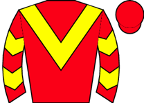 Threelittleangels ◆ 2 | 6.00 | - | 7 | 3-2 | going✓ trip✓ | 74 | 96 | Mounted in chute, went to post early wearing red hood, chased leaders on outer, pushed alo | ||
| 0 | 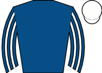 Diamond Blue Point ◆ 3 | 7.50 | - | 6 | 3 | trk✓ | 94 | Slowly into stride, soon chasing leaders, ridden and ran green 2f out, no extra inside fin | |||
| 0 | 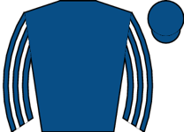 Aloisi Star | 8.00 | - | 2 | unraced | - | |||||
| 0 |  Persian Coast Persian Coast | 11.00 | - | 9 | unraced | - | |||||
| 0 |  Kirton Angel Kirton Angel | 13.00 | - | 5 | 3-7 | 88 | Midfield, pushed along and outpaced 2f out, dropped to last entering final furlong, soon f | ||||
| 0 | 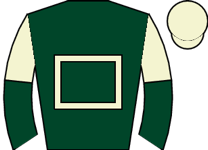 Ruby Punch | 15.00 | - | 13 | unraced | - | |||||
| 0 |  Letter To Hermione Letter To Hermione | 26.00 | - | 1 | 6 | 92 | Held up towards rear, ridden and kept on one pace from 2f out | ||||
| 0 | 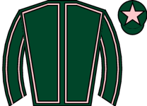 Mystical Magical | 34.00 | - | 10 | 9 | 83 | Handy, pushed along over 2f out, soon dropped away | ||||
| 0 | Milkin It | 67.00 | - | 12 | unraced | - | |||||
| 0 | Peacock's Way ⚠ ground | 101.00 | - | 3 | 6-9 | 88 | In rear throughout | ||||
| 0 | Kissamee ⚠ hard trk ▲ cls | 101.00 | - | 8 | 9 | 92 | Towards rear throughout |
⚠ limited form — likely skip
| Res | Horse | Price | BSP | Dr | Form | Crse | Suit | OR | Spd | TF | Last comment |
|---|---|---|---|---|---|---|---|---|---|---|---|
| 0 | Leading Role ◆ 1 ★ EYE ▼ cls | 2.25 | - | 7 | 1 | trip✓ trk✓ | 90 | Chased leaders, ridden over 2f out, led over 1f out, kept on well inside final furlong, al | |||
| 0 |  Ever Since ◆ 3 Ever Since ◆ 3 | 3.25 | - | 6 | unraced | draw✓ | - | ||||
| 0 | Afif ◆ 2 ⚠ draw | 6.00 | - | 2 | 4-6 | 92 | Raced in rear, shaken up over 2f out, minor headway to pass beaten rivals over 1f out, no | ||||
| 0 | Masai Land ⚠ ground | 11.00 | - | 8 | 7-5 | 91 | Prominent, ridden over 2f out, ran on same pace inside final furlong | ||||
| 0 |  Bayside Waltz Bayside Waltz | 15.00 | - | 5 | 5 | draw✓ | 84 | Edged left start, slowly away and pushed along early, recovered and raced in third after 1 | |||
| 0 |  Steel Nation ⚠ ground Steel Nation ⚠ ground | 15.00 | - | 4 | 8 | draw✓ | 84 | Mid-division, pushed along 2f out, found nil | |||
| 0 | Dj Harry ⚠ draw | 51.00 | - | 3 | 6-8 | 85 | Towards rear, soon dropped to last, outpaced over 3f out, tailed off over 1f out | ||||
| 0 | Penselwood ⚠ draw ⚠ ground ▲ cls | 67.00 | - | 1 | 7-9 | 90 | Held up in rear of mid-division, nudged along over 3f out, struggling and weakened from ov | ||||
| 0 | Port Eleonora ⚠ ground ▲ cls | 151.00 | - | 9 | 13 | 85 | Slowly away, always towards rear |
⚠ limited form — likely skip
| Res | Horse | Price | BSP | Dr | Form | Crse | Suit | OR | Spd | TF | Last comment |
|---|---|---|---|---|---|---|---|---|---|---|---|
| 0 |  Al Lahbab ◆ 1 Al Lahbab ◆ 1 | 1.91 | - | 7 | 2 | 97 | Chased leader, pushed along 3f out, ridden and pressed winner over 1f out, forced sustaine | ||||
| 0 |  Kings Medal Kings Medal | 5.00 | - | 5 | 4 | draw✓ | 88 | Wore red hood to post, tracked front pair, pushed along and closed 2f out, soon moved into | |||
| 0 | Simply George ◆ 2 | 8.00 | - | 6 | unraced | draw✓ | - | ||||
| 0 |  Vulcanist ⚠ draw Vulcanist ⚠ draw | 9.00 | - | 2 | 5 | 93 | Prominent, shaken up and switched right over 2f out, weakened inside final furlong | ||||
| 0 | Adventus Saxonum ⚠ draw | 11.00 | - | 1 | unraced | - | |||||
| 0 | Silent Wisdom ⚠ draw | 15.00 | - | 3 | 8-6 | 94 | Mid-division, ridden over 2f out, weakened inside final furlong | ||||
| 0 | Laurel Crown | 26.00 | - | 9 | 10 | 89 | Towards rear, never a factor | ||||
| 0 | Graceful Gracie ◆ 3 ▲ cls | 51.00 | - | 4 | 6 | 1r | draw✓ | 93 | Towards rear, pushed along 2f out, ridden well over 1f out, moderate late headway | ||
| 0 |  Splintered ⚠ ground Splintered ⚠ ground | 101.00 | - | 8 | 8-7 | 87 | Towards rear, pushed along 3f out, hung left and beaten well over 1f out |
| Res | Horse | Price | BSP | Dr | Form | Crse | Suit | OR | Spd | TF | Last comment |
|---|---|---|---|---|---|---|---|---|---|---|---|
| 0 | Rhythm N Hooves ◆ 2 ★ EYE ▲ cls | 5.00 | - | 7 | 8-8-1-8-2-1 | going✓ trip✓ trk✓ | 89 | 96 | ★★★★★ | Wore hood to post, led, headed and prominent after 1f, regained lead after 2f out, ridden | |
| 0 | Law Of Average ◆ 3 M2 | 5.50 | - | 5 | 1-1-3-1-4-3 | going✓ trip✓ trk✓ | 89 ↑ | 95 | ★★★★☆ | Midfield, progress to lead 3f out, ridden over 1f out, headed final 110yds, lost second ne | |
| 0 | Tan Rapido M2 ★ EYE ⚠ draw ▲ cls | 5.50 | - | 9 | 5-7-8-8-1-2 | 1r 1p | going✓ trip✓ trk✓ | 81 | 96 | ★★★★☆ | Towards rear, pushed along and headway 2f out, ridden over 1f out, kept on inside final fu |
| 0 | Almaty Star ▲ cls | 8.00 | - | 4 | 18-8-3-16-2-4 | trip✓ | 77 ↓ | 94 | ★★★☆☆ | Went left and blindfold briefly blindfolded rider start, prominent, led after 1f, ridden 2 | |
| 0 | Fiorella Princess ◆ 1 ★ EYE ▲ cls | 11.00 | - | 1 | 6-2-1-4-5-1 | going✓ trip✓ draw✓ | 85 ↑ | 98 | ★★★☆☆ | Wore hood and went early to post, keen, made all, ridden over 1f out, faced sustained chal | |
| 0 | Atomic Force ⚠ draw ▼ cls | 11.00 | - | 10 | 1-1-11-3-2-15 | going✓ trip✓ | 94 ↑ | 96 | ★★★★☆ | Wore hood to post, midfield far side group, ridden 2f out, soon no impression | |
| 0 | Knebworth ▼ cls | 11.00 | - | 6 | 2-10-12-3-4-14 | 1r | going✓ | 90 | 96 | ★★★★☆ | Raced far side, mid-division, headway 3f out, weakened inside final furlong |
| 0 | Rosenpur ▲ cls | 13.00 | - | 3 | 5-6-4-9-1-6 | trip✓ draw✓ | 82 | 96 | ★★★☆☆ | Led, ridden over 2f out, headed over 1f out, plugged on same pace inside final furlong | |
| 0 | El Bufalo ▲ cls | 13.00 | - | 2 | 2-5-6-2-9-3 | 2r 1p | going✓ trip✓ trk✓ draw✓ | 77 | 94 | ★★☆☆☆ | Bumped start, slowly away, towards rear, ridden and headway over 2f out, no impression unt |
| 0 | Betsen ⚠ draw ⚠ ground ▲ cls | 15.00 | - | 11 | 1-8-5-3-9-8 | trip✓ | 82 | 97 | ★★☆☆☆ | Midfield, headway and ridden 2f out, weakened final furlong | |
| 0 | Alligator Alley ⚠ draw | 26.00 | - | 8 | 1-3-6-9-8-10 | 2r 1W | going✓ trip✓ trk✓ | 85 | 94 | ★★☆☆☆ | Hampered start, raced far side, in rear, never showed |
| Res | Horse | Price | BSP | Dr | Form | Crse | Suit | OR | Spd | TF | Last comment |
|---|---|---|---|---|---|---|---|---|---|---|---|
| 0 | Intervention ◆ 3 ⚠ draw ▲ cls | 3.25 | - | 10 | 7-15-3-12-1-2 | 1r 1W | going✓ trip✓ trk✓ | 66 | 95 | ★★★★☆ | Prominent, ridden over 2f out, headway to lead over 1f out, faced sustained challenge insi |
| 0 | Split Elevens ◆ 1 M2 | 4.00 | - | 1 | 4-1-2-2-2-2 | 1r | going✓ trip✓ trk✓ | 67 | 94 | ★★★☆☆ | Dwelt, towards rear, headway over 2f out, switched right over 1f out, led inside final fur |
| 0 | Newsreader ★ EYE ▲ cls | 5.50 | - | 3 | 10-6-4-5-5-2 | going✓ trip✓ | 65 ↓ | 96 | ★★★★★ | Held up towards rear, ridden and headway 2f out, progress to chase leader 1f out, kept on | |
| 0 | Valentine Boy ★ EYE ▲ cls | 6.00 | - | 4 | 4-8-4-6-5-3 | draw✓ | 65 ↓ | 95 | ★★☆☆☆ | Towards rear, headway over 3f out, ridden and stayed on well from 2f out | |
| 0 | Queue Dos ⚠ ground | 11.00 | - | 2 | 7-3-8-5-5-5 | 1r | trk✓ | 70 ↓ | 95 | ★★★☆☆ | Slowly into stride, rear, ridden over 3f out, kept on one pace from 2f out, never in conte |
| 0 | Mumayaz ◆ 2 | 17.00 | - | 6 | 5-6-7-5-1-10 | draw✓ | 69 | 98 | ★★☆☆☆ | Towards rear, ridden and no impression over 1f out, eased final furlong | |
| 0 | Assessment ⚠ draw ⚠ ground | 17.00 | - | 9 | 7-11-10-2-10-9 | trk✓ | 65 ↓ | 90 | ★☆☆☆☆ | Slowly away, went prominent on outside after 1f, driven 2f out, weakened inside final furl | |
| 0 | Giorgio M ⚠ ground | 21.00 | - | 5 | 6-4-7-7-7-9 | 2r | draw✓ | 64 ↓ | 93 | ★★☆☆☆ | In rear, switch to far side ti make some headway 2f out, outpaced inside final furlong, we |
| 0 | Receipt ⚠ draw | 34.00 | - | 11 | 1-12-9-8-12-10 | going✓ trip✓ trk✓ | 65 | 91 | ★☆☆☆☆ | Slowly into stride, always rear division | |
| 0 | Lessay ⚠ draw | 51.00 | - | 8 | 7-2-6-1-4-8 | 4r 1W | going✓ trip✓ trk✓ | 60 ↑ | 93 | ★★★☆☆ | Midfield, ridden over 2f out, weakened inside final furlong |
| 0 | Royal Jet ▲ cls | 67.00 | - | 7 | 2-6-1-7-9-12 | going✓ trip✓ draw✓ | 63 | 89 | ★☆☆☆☆ | Very slowly away, lost 10 lengths start, always behind |
| Res | Horse | Price | BSP | Dr | Form | Crse | Suit | OR | Spd | TF | Last comment |
|---|---|---|---|---|---|---|---|---|---|---|---|
| 0 | R P Mcmurphy ◆ 2 ▲ cls | 3.50 | - | 10 | 3-4-1-2-8-1 | 4r 2W | going✓ trip✓ trk✓ | 70 ↑ | 93 | ★★★★★ | Went to post early wearing red hood, prominent, slightly hampered after 2 furlongs, eased |
| 0 |  Yehudi M2 ⚠ draw ▲ cls Yehudi M2 ⚠ draw ▲ cls | 6.00 | - | 3 | 5-4-6-1-3-1 | 3r 1W | going✓ trip✓ trk✓ | 65 | 94 | ★★★★☆ | Front mid-division in fourth, edged left 1f out and ridden to press leaders, lugged left a |
| 0 | Danehill Star ◆ 1 | 6.50 | - | 11 | 3-5-1-1-3-2 | going✓ trk✓ | 70 ↑ | 93 | ★★★★☆ | Pressed leader, ridden to lead 2f out, headed inside final furlong, kept on | |
| 0 | Criminal Shore ⚠ ground | 7.00 | - | 5 | 6-3-5-7-10-3 | draw✓ | 67 ↓ | 92 | ★★★★☆ | Led, pushed along 2f out, headed over 1f out, battled on at same pace | |
| 0 |  Galba ★ EYE Galba ★ EYE | 11.00 | - | 12 | 3-2-3-3-4-4 | 69 | 93 | ★★★☆☆ | Wore hood to post, rear of midfield, ridden and switched left over 2f out, kept on inside | ||
| 0 |  Susie Sioux ⚠ draw ⚠ ground ▼ cls Susie Sioux ⚠ draw ⚠ ground ▼ cls | 13.00 | - | 1 | 2-7-2-5-1-6 | trip✓ | 69 | 94 | ★★★☆☆ | Slowly into stride towards rear, shaken up over 2f out, every chance over 1f out, weakened | |
| 0 | Jojo's Legacy ⚠ draw ⚠ ground ⚠ IRE form | 13.00 | - | 2 | 3-4-8-6-5-5 | 66 ↓ | 94 | ★★★☆☆ | Chased leaders, pushed along over 1f out, stayed on, never threatened | ||
| 0 | Lahan Kingman ◆ 3 ★ EYE | 15.00 | - | 7 | 2-2-4-4-2-7 | 2r 2p | going✓ trk✓ draw✓ | 68 | 93 | ★★☆☆☆ | Held up in mid-division, kept on inside final 110 yards, never dangerous |
| 0 | Captain Parma ⚠ ground | 17.00 | - | 8 | 9-11-20-5-9-10 | 2r | draw✓ | 68 ↓ | 91 | ★★★☆☆ | Tracked leaders, pushed along 3f out, weakened over 1f out |
| 0 | West Byfleet ⚠ draw ▼ cls | 21.00 | - | 4 | 14-2-4-5-6-10 | 67 | 85 | ★★☆☆☆ | Went to post early, dwelt, mid-division, pushed along 3f out, no reponse | ||
| 0 | Rating ⚠ ground | 26.00 | - | 9 | 5-1-8-3-2-7 | trip✓ trk✓ | 67 | 94 | ★★☆☆☆ | Prominent, effort 2f out, weakened inside final furlong | |
| 0 | Calyxoh ⚠ ground | 26.00 | - | 6 | 3-11-4-3-11-10 | draw✓ | 68 ↓ | 84 | ★★☆☆☆ | Chased leaders, pushed along over 2f out and faded |
| Res | Horse | Price | BSP | Dr | Form | Crse | Suit | OR | Spd | TF | Last comment |
|---|---|---|---|---|---|---|---|---|---|---|---|
| 0 | Sea The Light ★ EYE ⚠ draw | 4.50 | - | 2 | 6-6-7-11-7-1 | 2r 1W | going✓ trip✓ trk✓ | 73 ↓ | 91 | ★★★☆☆ | Midfield, shaken up over 2f out, not much room over 1f out, switched right and ran on well |
| 0 |  Ted Le Saux ◆ 2 M2 ★ EYE ▼ cls Ted Le Saux ◆ 2 M2 ★ EYE ▼ cls | 7.00 | - | 5 | 2-1-3-6-5-3 | 2r 2p | going✓ trip✓ trk✓ draw✓ | 74 | 94 | ★★★★★ | Slowly into stride, towards rear, ridden and stayed on well from over 1f out, never nearer |
| 0 | Oman M2 ★ EYE ⚠ ground | 7.00 | - | 10 | 7-9-6-5-1-2 | 1r | trk✓ | 71 ↓ | 87 | ★★★☆☆ | Chased leader, ridden and led over 2f out, kept on well inside final furlong, headed 110yd |
| 0 | Camino Del Ray | 7.50 | - | 11 | 6-1-4-8-4-1 | 1r | going✓ trk✓ | 73 | 92 | ★★★☆☆ | Handy, pushed along and led over 1f out, stayed on gamely when challenged, always holding |
| 0 | Cosmos Raj ◆ 1 | 8.00 | - | 6 | 1-4-1-8-2-2 | 1r 1p | going✓ trip✓ trk✓ draw✓ | 74 ↑ | 91 | ★★★☆☆ | Fly jumped start, tracked leaders, angled out left and pushed along to challenge over 1f o |
| 0 | Romance Spirit | 8.00 | - | 9 | 2-4-2 | 1r 1p | going✓ trk✓ | 75 | 86 | ★★★☆☆ | Tracked leaders, ridden over 1f out, went third final furlong, took second post |
| 0 | Cancan In The Rain | 13.00 | - | 13 | 4-8-3-10-6-5 | 71 ↓ | 90 | ★★★★☆ | Mid-division, pushed along 2f out, stayed on, no impression | ||
| 0 | The Sweet Escape ◆ 3 ▼ cls | 15.00 | - | 8 | 1-1-2-1-10-5 | trk✓ draw✓ | 75 ↑ | 93 | ★★★☆☆ | Prominent in centre, drifted to far side and overall leader 4f out, pushed along over 2f o | |
| 0 | Felix Gem ⚠ draw ▼ cls | 15.00 | - | 4 | 5-2-1-4-11 | 1r 1p | going✓ trip✓ trk✓ | 75 | 93 | ★★★☆☆ | Soon led, headed over 5f out, weakened from over 2f out |
| 0 |  Livemore ▼ cls Livemore ▼ cls | 21.00 | - | 7 | 5-1-6-10 | draw✓ | 75 | 79 | ★★☆☆☆ | Slowly away, took keen hold, raced centre, midfield, ridden 4f out, weakened 3f out | |
| 0 |  Mr Nugget ★ EYE ⚠ draw Mr Nugget ★ EYE ⚠ draw | 21.00 | - | 3 | 2-9-5-6-9-5 | 2r 1p | going✓ trip✓ trk✓ | 71 | 89 | ★★★☆☆ | Raced in rear, ridden over 2f out, kept on inside final furlong, never nearer |
| 0 | Farasi Lane ★ EYE ⚠ draw ▼ cls | 26.00 | - | 1 | 5-1-5-3-8-6 | 75 | 89 | ★★★☆☆ | Slowly away, in rear, outpaced 3f out, headway from 1f out, kept on well towards finish | ||
| 0 | Paladin ⚠ ground ▼ cls | 26.00 | - | 12 | 18-2-9-9-13-10 | trk✓ | 73 | 90 | ★★★★☆ | Mid-division, ridden 2f out and dropped away tamely |
| Res | Horse | Price | BSP | Dr | Form | Crse | Suit | OR | Spd | TF | Last comment |
|---|---|---|---|---|---|---|---|---|---|---|---|
| 0 |  Saxophonic ◆ 1 ★ EYE Saxophonic ◆ 1 ★ EYE | 2.62 | - | 3 | 6-4-4-1-3-1 | 2r 2W | going✓ trip✓ trk✓ | 59 | 89 | ★★★★★ | Midfield, ridden and headway 2f out, kept on strongly inside final furlong, led 110yds out |
| 0 |  Kathleen Mary ◆ 2 M2 Kathleen Mary ◆ 2 M2 | 5.00 | - | 9 | 7-7-6-6-5-2 | going✓ | 59 ↓ | 90 | ★★★☆☆ | Soon led, ridden over 1f out, headed inside final furlong, not pace of winner | |
| 0 | It's A Love Thing | 6.00 | - | 7 | 8-10-8-3-2-4 | 3r 1p | going✓ trk✓ | 56 | 92 | ★★★☆☆ | Tracked leaders, pushed along 3f out, stayed on same pace |
| 0 | Havachoc ★ EYE | 9.00 | - | 6 | 4-7-9-6-5-3 | 2r 1p | trk✓ | 51 ↓ | 82 | ★★★★☆ | Led, headed after 4f, pushed along and led again 2f out, ridden over 1f out, kept on insid |
| 0 | Heart Sign ★ EYE | 11.00 | - | 4 | 6-3-7-6-1-5 | trip✓ | 59 | 85 | ★★★☆☆ | Held up in rear, headway over 1f out, kept on inside final furlong, not able to get on ter | |
| 0 | Man Of Desert ◆ 3 ★ EYE ⚠ ground ▼ cls | 13.00 | - | 11 | 7-7-6-7-4-3 | 2r 1p | trk✓ | 58 ↓ | 93 | ★★★☆☆ | In rear, ridden and headway 2f out, outpaced over 1f out, kept on well inside final furlon |
| 0 |  Tiger Beetle Tiger Beetle | 17.00 | - | 2 | 7-8-3-5-1-7 | 3r 1W | going✓ trip✓ trk✓ | 53 | 89 | ★★★☆☆ | Towards rear, lost touch 2f out |
| 0 | The Bay Warrior | 21.00 | - | 5 | 3-4-2-7-2-10 | 2r 1p | going✓ trip✓ trk✓ | 58 | 86 | ★★★☆☆ | Led, ridden 2f out, headed and weakened quickly over 1f out |
| 0 | Sea Of Charm ▼ cls | 26.00 | - | 1 | 6-3-2-2-4-7 | 1r | going✓ trk✓ | 55 | 81 | ★★★☆☆ | Chased leaders on outer, pushed along 2f out, dropped away over 1f out |
| 0 | Rogue Sea | 34.00 | - | 10 | 7-6---10-8-10 | 60 ↓ | 91 | ★☆☆☆☆ | Mid-division, ridden and lost place 3f out, soon beaten | ||
| 0 |  Hellion ⚠ ground Hellion ⚠ ground | 34.00 | - | 8 | --8---10-4-11 | 1r | 60 ↓ | 76 | ★☆☆☆☆ | Prominent, ridden 3f out, weakened 1f out |
Decision support, not betting advice. Prices are forecast/early —
check the live market. Speed figures are final-time only (no sectionals), so weigh
them with your own read on how a race was run.